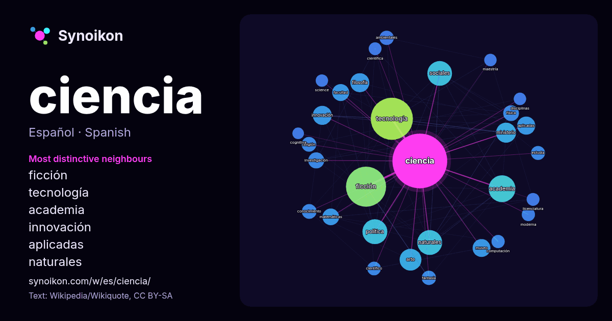

Español · palabra popular
ciencia
“science” · Las palabras encontradas a su alrededor en 1570 apariciones de Wikipedia, Wikiquote.

Vecinos más característicos
- ficción 123×
- tecnología 108×
- academia 41×
- innovación 33×
- aplicadas 30×
- naturales 26×
- filosofía 25×
- ministerio 24×
- matemáticas 22×
- sociales 21×
- fantasía 19×
- facultad 19×
- estudia 19×
- política 19×
- ambientales 17×
- computación 17×
- religión 17×
- física 16×
- arte 15×
- science 15×
× = cuántas veces más que en el texto general de Wikipedia.
Vecinos más frecuentes
- tecnología 172
- ficción 156
- academia 70
- historia 60
- naturales 60
- política 60
- sociales 59
- nacional 48
- arte 46
- estudio 42
- ministerio 39
- filosofía 35
- innovación 35
- aplicadas 32
- museo 31
- desarrollo 30
- facultad 28
- matemáticas 27
- investigación 25
- física 24
En contexto
- La historia de la ciencia abarca la mayoría del registro histórico, siendo los primeros precursores identificables de la ciencia moderna datados en la Wikipedia snippets · Ciencia
- tecnología, las ciencias que soportan la mayor parte de especulación temática de la ciencia ficción hard. Barceló (1990, p. 55) Respecto a la ciencia ficción Wikipedia snippets · Ciencia ficción
- La ciencia política o politología es la ciencia social que estudia la teoría y práctica de la política, los sistemas y los comportamientos políticos en Wikipedia snippets · Ciencia política
- alcances de la ciencia; podría decirse que busca responder a la pregunta cómo se hace la ciencia. Lo que intenta la filosofía de la ciencia es explicar Wikipedia snippets · Filosofía de la ciencia
- La historia de la ciencia documenta el desarrollo histórico de la ciencia, la técnica y la tecnología, así como la interrelación que han tenido las tres Wikipedia snippets · Historia de la ciencia
- El cine de ciencia ficción es un género cinematográfico, trasunto del género literario, que utiliza la ciencia para fundamentar narraciones con representaciones Wikipedia snippets · Cine de ciencia ficción
- La historieta o cómic de ciencia ficción constituye uno de los géneros más importantes en los que puede dividirse la producción historietística. Según Wikipedia snippets · Historieta de ciencia ficción
- La historia de la ciencia y la tecnología en España abarca la historia de la ciencia y la historia de la tecnología en España. Al no existir un consenso Wikipedia snippets · Historia de la ciencia y la tecnología en España
Más palabras
- agua
- arte
- bosque
- caballo
- camino
- campana
- canción
- ciudad
- clima
- comida
- corazón
- desierto
- dinero
- dios
- espejo
- estrella
- familia
- fuerza
- gato
- historia
- invierno
- isla
- jardín
- lengua
- lluvia
- madre
- mapa
- miel
- montaña
- muerte
- naturaleza
- oro
- otoño
- pan
- perro
- puente
- reloj
- sal
- salud
- silencio
- sombra
- tiempo
- tormenta
- trabajo
- tren
- té
- verano
- verdad
- vida
Precalculado el 2026-10-09 con los ajustes predeterminados (±5 palabras, corpus mediano). El mapa interactivo puede actualizarlo con datos en vivo.
Interfaz traducida automáticamente; se agradecen correcciones.